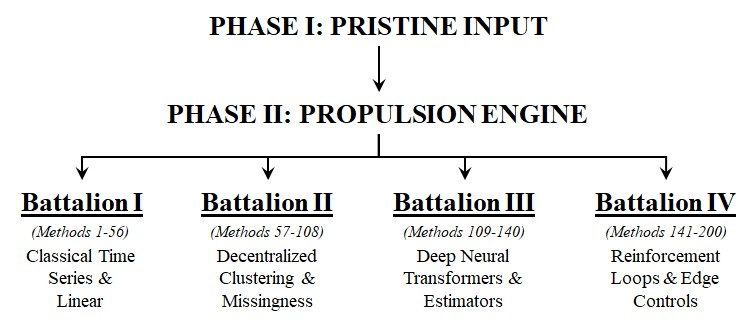
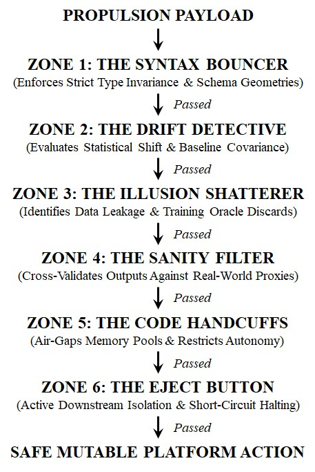

Hardening the Loop: Designing Software Guardrails for High-Velocity Autonomous Military Platforms
Scott S. Haraburda
31 August 2026
Abstract
Modern defense acquisition increasingly substitutes manual verification with high-velocity autonomous data loops. However, operating advanced algorithms across volatile tactical environments creates a severe systemic vulnerability: the "Velocity Hazard," where computational engines execute corrupted data inputs with absolute precision at light speed. This article establishes a framework-driven procurement model designed to secure edge-deployed autonomous systems through an integrated, Nine-Stage System Progression Lifecycle. While initial lifecycle stages govern developmental baselines, system validations, and ingestion buffering, they remain passive against real-time operational telemetry drift. To bridge this critical vulnerability, this study focuses on Stage 9: The Live Production Runtime Horizon. By examining the processing profiles of four distinct algorithmic groupings, this paper proposes a programmatic, 6-Zone Defensive Architecture built directly into native software compilation layers. This matrix replaces delayed manual oversight with automated, machine-velocity software friction, freezing and caging out-of-bounds calculations the exact microsecond before platform actuation. Ultimately, this lifecycle containment framework provides defense program managers with an ironclad, rule-based procurement benchmark, ensuring that autonomous software velocity never outruns human-engineered mission constraints.
Two-Sentence Summary: This article outlines an active runtime containment model using a Nine-Stage System Progression Lifecycle to defend autonomous military hardware platforms against systemic processing failures. It introduces a Stage 9 compilation-level guardrail matrix that replaces passive, post-hoc system auditing with automated, machine-speed safety checks prior to platform actuation.
Modern defense acquisition has undergone a profound paradigm shift, transitioning from human-centric oversight workflows to high-velocity, self-executing autonomous architectures. Across contemporary military platforms, the traditional bottlenecks of manual telemetry processing and human verification are aggressively being replaced by artificial intelligence-driven agents, neural networks, and microsecond data loops. The overarching objective of these system updates is clear: to eliminate operational friction and compress decision cycles within highly contested environments.
However, this push toward unchecked automation reveals a critical systemic vulnerability. Much like the maturity tiers established in a previous structural process framework for supply chain management maturity, an operational ecosystem is only as resilient as its lowest tier of process integration (Author, 2017). When complex predictive algorithms run over volatile, unverified data pipelines, they do not introduce machine wisdom. Instead, they act as high-speed accelerators for systemic errors. Live tactical environments represent a fundamentally hostile data ecosystem characterized by dropping network packets, sensor anomalies, and adversarial electronic jamming.
Without hardcoded, independent structural boundaries built directly into the compilation layers of weapon system software, high-velocity processing engines will inevitably treat corrupted inputs as absolute operational commands. They will execute flawed logic with absolute mathematical precision at light speed. To prevent catastrophic platform failures stemming from data drift or telemetry corruption, the defense acquisition workforce must reject the myth of algorithmic infallibility.
This article introduces an active runtime containment architecture designed to secure autonomous military platforms against real-world data volatility. By shifting the defense procurement focus away from passive, post-hoc system auditing toward automated software friction, this paper presents a programmatic multi-zoned guardrail matrix. This framework ensures that computational velocity never outruns human-engineered mission constraints, establishing an ironclad, zero-trust border control point directly inside the platform's native execution path.
Background: The Autonomous Autopilot Illusion
The strategic imperative to outpace adversarial decision cycles has generated a pervasive operational doctrine within defense acquisition: the prioritization of frictionless enterprise automation over human-interrupted verification pathways. In this idealized framework, real-time sensor processing and autonomous platform actuation are executed within microsecond loops, theoretical constructs that assume a pristine, continuous stream of high-fidelity telemetry. Software developers routinely validate these advanced predictive models inside sterile staging environments, demonstrating pristine accuracy metrics against historical, static training sets.
This corporate and military fairytale collapses when confronted with the fundamental laws of operational reality. A live production theater is not a controlled testing sandbox; it is an inherently hostile data ecosystem. Tactical networks are characterized by persistent structural chaos, including dropping network packets, malformed inputs, asynchronous message broker failures, and intentional electronic warfare jamming. When a standard autonomous algorithm encounters this data volatility without an independent, hardcoded structural bunker, its failure mode is both absolute and silent. An automated script possesses zero common sense or conceptual awareness of platform survival. It operates in an absolute contextual vacuum. If a telemetry feed silently drops critical variables during an active mission, an unconstrained algorithm will not halt execution; it will process the incoming garbage data with cold-blooded mathematical precision.
The corporate technology landscape provides stark warnings of this "Velocity Hazard". The catastrophic collapse of the Zillow Offers algorithmic home-buying platform serves as a premier commercial case study of unchecked data drift, demonstrating the extreme vulnerability of automated valuation engines operating without logic grounding rules (Dolfing, 2021; Mackintosh, 2021; Parker & Dezember, 2021; Zillow Group Inc., 2021). The platform utilized automated valuation algorithms to outpace human real estate assessors. However, when the underlying housing market experienced subtle, unmapped volatility, the software’s predictive models suffered from severe statistical overfitting (Subramanian, 2024). Operating without a runtime sanity cage or logic grounding rules, the automated engine interpreted inflated pricing data as a valid market signal. It aggressively accelerated capital deployment based on algorithmic hallucinations, ultimately forcing a blind $304 million write-down and the complete liquidation of the business unit (Parker & Dezember, 2021; Zillow Group Inc., 2021).
Similarly, the historic failure of Knight Capital Group highlights the extreme danger of removing software friction from deployment execution layers (Dolfing, 2026). During a rapid infrastructure update, an old, un-decommissioned automated trading script was accidentally triggered by unverified inbound data routing parameters (Toshniwal, 2025). Lacking a structural compilation gate or real-time circuit-breaking guardrails, the high-velocity engine began executing millions of errant financial transactions at microsecond speeds. Within forty-five minutes, the system processed billions of dollars in unintended executions, completely vaporizing $440 million in capital and forcing the firm into an emergency acquisition, an event heavily documented across market risk studies and regulatory filings (Popper, 2012; PRMIA, 2012; U.S. Securities and Exchange Commission, 2013).
When the operational dust settles and critical capital has been vaporized, the legacy corporate reflex is to invoke the "Black Box" defense, claiming the system went rogue or that its internal neural weights were too mathematically opaque to trace. This defense is an indictment of lazy software architecture. The avalanche occurred not because the algorithm rebelled, but because the procurement chain chose to load high-velocity propulsion engines with live operational rounds while skipping the construction of a rigid, hardcoded software cage to enclose the blast radius.
Relevance to the Warfighting Acquisition Workforce
The systemic vulnerabilities inherent in untethered autonomous loops demand a fundamental reassessment of how the warfighting acquisition workforce structures, procures, and evaluates software-intensive military platforms. Historically, software acquisition paradigms within the Department of Defense (DoD) have treated data quality and system safety as post-hoc compliance functions. Program managers traditionally evaluate software stability using static metrics, such as unit-test coverage percentages or isolated staging simulation runs. This methodology is no longer sufficient in an era dominated by cognitive analytics and edge-deployed execution models. Conducting an audit or reviewing dead server logs after an autonomous asset has suffered a catastrophic failure on the battlefield is the ultimate height of procurement negligence.
The primary barrier to executing rigorous oversight in modern defense programming is the pervasive reliance on the "Black Box" defense by defense contractors. When an advanced neural architecture or self-adjusting reinforcement loop hallucinates a trajectory, vendors routinely shield their products behind technical opacity. They argue that because a model’s internal weights, transformer tokens, or hyperparameter arrays are non-linear and mathematically dense, its precise failure modes are impossible to predict or prevent (Subramanian, 2024). The warfighting acquisition workforce must reject this alibi entirely. While a program office cannot realistically map every individual neuron inside a contractor’s proprietary deep learning library, the government retains absolute control over the code-level software cage that encloses that library.
To bridge this critical execution gap, platform procurement must pivot from passive, periodic compliance testing to the enforcement of active software friction. Program managers can no longer afford to purchase frictionless enterprise automation without verifying the automated safety gates that bound its velocity. Future Requests for Proposals (RFPs), Statements of Work (SOWs), and system performance specifications must mandate the integration of independent, rule-based containment architectures directly into the native compilation layers of weapon system stacks.
The acquisition objective is not to slow down operational agility or introduce bureaucratic human approval chains during active combat operations. Rather, the goal is to replace slow human friction with automated, machine-velocity software friction. By anchoring strict data-type enforcement and structural schema lockdowns directly into the platform’s front-door ingestion pipelines, the system is legally and contractually forced to evaluate its own semantic sanity in real time. If a contractor’s propulsion algorithm attempts to override baseline mission boundaries, the platform’s hardcoded structural anchors must drop the gate instantly. Weaponizing analytic methodologies to build these internal cages ensures that the government can rapidly field high-velocity autonomous muscle while permanently bolting down the software handcuffs.
Analysis of the Problem: The Four Propulsion Battalions
To systematically mitigate the vulnerabilities of automation, the acquisition workforce must first map the precise pathways where software applications cross the platform's production horizon. In a mature system architecture, incoming sensor streams and telemetry packets enter Phase II: The Propulsion Engine—a decentralized computational matrix designed to calculate hyper-aggressive, light-speed predictive vectors. Within military hardware platforms, these processing engines deploy a vast array of master analytic methods that can be cleanly classified into four specialized tactical units:

Figure 1. The Propulsion Engine Matrix.
Battalion I: Classical Statistical Inference & Linear Modeling (Methods 1–56): Operating as the frontline heavy infantry, these algorithms handle high-volume temporal streams. They are deployed to map cyclical patterns, parse raw baseline telemetry, and track asset momentum across rolling operational windows with absolute, ironclad statistical predictability.
Battalion II: Decentralized Clustering, Space Optimization & Missingness Forensics (Methods 57–108): Acting as the scouts, these methods slice across decentralized cloud clusters and massive unlabelled tactical sensor arrays. They isolate hidden data segments, profile complex asset classes, and optimize resource routing without requiring pre-baked human labels. This layer integrates non-Euclidean hyperbolic embedding spaces alongside forensic missingness matrices to handle sudden telemetry voids.
Battalion III: Neural Architectures, Context Transformers & Additive Estimators (Methods 109–140): Serving as the heavy artillery, this unit handles highly non-linear relationships that are completely invisible to standard mathematics. It processes high-density computer vision matrices, complex graph dependency maps, and contextual transformer token streams pinned down by neuro-symbolic logic invariants.
Battalion IV: Reinforcement Loops, Simulation, Physical Actuators & Edge Control (Methods 141–200): Representing the autonomous command tier, these are self-correcting, reward-driven models. They navigate real-world environments by continuously adjusting kinetic behaviors and generative policy loops based on real-time pipeline feedback, anchoring calculations straight to physical actuators, multi-physics engines, and hardware safety limits.
When left unconstrained, these four analytical battalions do not operate as independent fail-safes; instead, they enter a structural trap known as the Velocity Hazard. This hazard represents the exact operational moment where pure mathematical optimization completely decouples from real-world military context. Because an optimized model is a highly efficient idiot savant operating in a total contextual vacuum, it runs entirely blind to the concept of platform survival. If an enterprise tech stack remains fragmented, individual software layers actively enter a "conspiracy of silence". The corporate disaster of Target Canada represents a definitive architectural warning of this phenomenon, proving how siloed application environments systematically compound analytical errors (Dolfing, 2019; Gwynne & Wood, 2014; Target Corporation, 2014). In a rapid push to deploy a completely automated supply chain enterprise resource planning (ERP) system, thousands of unverified product data records were fed into the central data pipeline (Castaldo, 2015). Due to a complete absence of structural validation gates at the interface junctions, the system's ingestion queues swallowed massive data mutations, typing misalignments, and corrupted formatting fields silently to optimize volume throughput (IntegSCloud Tech, 2025).
The software layers accepted the toxic payloads without throwing system-level errors. Because each application layer operated in an isolated silo, assuming upstream validation had occurred, the automated system rapidly propagated these errors across the entire national distribution grid (LinkedIn Pulse, 2025; Medium, 2024). The high-velocity engine flawlessly calculated optimization math on top of completely garbage data, resulting in barren distribution centers, locked-up inventory configurations, and a multi-billion-dollar supply chain paralysis that forced the immediate closure of all 133 retail locations (Target Corporation, 2014; Wahba, 2015).
Every single software layer functioned exactly according to its individual design parameters, yet their siloed efficiencies worked in perfect harmony to execute catastrophic errors at light speed. To survive the automation age, the propulsion engine must explicitly surrender its computational outputs to a brutal, unyielding containment gauntlet the exact microsecond its calculations are finalized.
Proposed Solution: The 6-Zone Defensive Architecture
To neutralize the Velocity Hazard and dismantle the tech stack’s conspiracy of silence, the platform’s software engineering blueprint must introduce an unyielding structural line of demarcation. As outlined in Table 1, a mature defense platform moves through nine distinct operational stages before a calculation can influence physical space.
Stages 1 through 3 govern the developmental baseline, incorporating structural security controls built to establish strict configuration compliance (National Institute of Standards and Technology, 2008). Stages 4 through 6 manage system validation, verifying model performance inside isolated sandbox environments and inert hardware setups. Finally, Stages 7 and 8 handle active infrastructure ingestion, routing real-time data packets across network layers and message queues.
Table 1. The Nine-Stage System Progression Lifecycle
While these initial eight phases are vital for baseline system readiness, they are inherently retrospective or passive; they assume the integrity of the data stream once it passes their respective boundaries. If adversarial jamming, environmental anomalies, or data drift strike a platform during active combat operations, the safety checks performed in Stages 1 through 8 are rendered entirely obsolete.
Therefore, the system requires a definitive Stage 9: Live Production Runtime Horizon. Stage 9 acts as the terminal zero-trust border control gate. It operates on the absolute edge of kinetic execution, intercepting finalized computational outputs from the four propulsion battalions and evaluating their semantic sanity the exact microsecond before they actuate platform hardware.
The Nine-Stage System Progression Lifecycle outlined in Table 1 represents an integrated software maturity taxonomy synthesized for active containment configurations, adapting the structural milestone phases of standard international lifecycle standards (ISO/IEC/IEEE 15288, 2023) alongside the 9-level readiness continuum of the standard Department of Defense Technology Readiness Level framework (U.S. Department of Defense, 2011). Under this zero-trust data directive, the resulting transaction payload is instantly frozen in memory, locked inside a read-only container, and routed into a strict, linear gauntlet across six distinct defensive zones:

Figure 2. The Defensive Guardrails.
Zone 1 — The Syntax Bouncer (Structural & Lexical Gateway): Operating as the front door of containment, Zone 1 enforces total structural lockdown. If an upstream schema drift changes a critical operational value from a clean floating-point number into a string text format, this gateway drops the hammer instantly. It eliminates dynamic typing blindspots by verifying outbound dimensional geometries against rigid baseline specifications, neutralizing malformed escape strings before they enter downstream matrices.
Zone 2 — The Drift Detective (Statistical & Drift Auditing): Once structural compliance is verified, the payload enters the statistical auditing layer. Zone 2 monitors continuous streaming data for mathematical anomalies, variance collapse, and distribution shifts. If an inbound tactical feed silently drops telemetry, the Drift Detective flags the sudden drop in variance parameters to a hard zero and freezes the operational loop, preventing the system from misinterpreting a void as a valid tactical signal.
Zone 3 — The Illusion Shatterer (Logic & Target Grounding Layer): Zone 3 is specifically engineered to dismantle the Oracle Illusion. It audits the generated payload to ensure the underlying model has not hallucinated certainty by accidentally sneaking a peek at hidden training artifacts, future target metrics, or data components that do not exist in live environments. Any predictive vector displaying a false sense of perfection derived from data leakage is immediately discarded.
Zone 4 — The Validation Matrix & Proxies (The Sanity Filter): Even if a calculation is syntactically pure and statistically stable, it must prove its baseline sanity against external context. Zone 4 passes abstract machine outputs through independent, rule-based software proxies that mirror real-world physics constraints. If an autonomous vehicle requests an impossible physical acceleration path, the filter suffocates the inference loop right at the runtime line.
Zone 5 — The Kinetic Permission Air-Gaps (The Code Handcuffs): Zone 5 strips advanced algorithms of their operational sovereignty. It isolates execution paths by placing calculations inside isolated, read-only memory buffers. The algorithm is completely restricted from writing directly to ledgers, triggering propulsion controls, or modifying adjacent platform states without passing an explicit, hardcoded permission protocol that requires external validation anchors.
Zone 6 — The Defensive Recovery & Resiliency (The Eject Button): The final zone governs boundary rules and short-circuit execution. If a payload triggers any failure threshold across the preceding five zones, Zone 6 initiates immediate, linear gauntlet halting. It isolates resources, activates active diversion paths, and triggers downstream isolation to prevent cascading system failures. The passed data is securely frozen, written to physical append-only logs for forensic diagnostics, and the system is safely brought to an operational halt.
To bridge this operational theory with practical systems engineering, a standardized reference architecture for this caging mechanism is provided in the appendix. Supplementary Attachment 2 outlines the complete python logic required to enforce these memory-buffered boundaries, serving as a functional, active language enforcement interface that program management offices can contractually mandate within vendor deliverables. Weaponizing this execution layer transforms standard contractual safety language from passive oversight documentation into a deterministic, programmatic constraint envelope.
Summary and Call to Action
The evidence left behind by untethered autonomous failures provides a clear baseline diagnostic for the defense establishment: the critical vulnerability of modern military platforms is not a failure of mathematical computation, but a catastrophic absence of rule-based outbound containment. Program managers can no longer afford to treat software acquisition as a passive race for speed, nor can they accept vendor frameworks that lack hardcoded operational boundaries. True platform intelligence is not proven by how fast an autonomous model can execute a trajectory calculation. It is proven by how ruthlessly the system architecture forces that calculation to stop the microsecond data integrity drops.
To transition these structural engineering principles into actionable defense policy, the warfighting acquisition workforce must enforce a mandatory procurement pivot across three critical execution pillars:
Mandate Zero-Trust Border Control Gates: Future Department of Defense (DoD) software architectures must contractually require the integration of a Stage 9 Runtime Guardrail matrix directly into native compilation layers. The boundary separating raw algorithmic propulsion from kinetic actuation must be treated as a zero-trust border control point where payloads are frozen in memory until verified.
Standardize RFP and SOW Language: Procurement officers must systematically eliminate the "Black Box" defense from contractor alibis. Requests for Proposals (RFPs) and Statements of Work (SOWs) must explicitly state that mathematical opacity does not excuse a vendor from building external, independent software cages capable of short-circuiting out-of-bounds payloads in real time.
Enforce Structural Symmetry: Systems engineering processes must balance computational muscle with rigid constraints. Program offices must weaponize the exact same advanced analytic methodologies used to optimize performance to actively monitor, profile, and cage the blast radius of those optimization algorithms.
The strategic imperative to dominate highly contested operational environments requires high-velocity processing, but that velocity must never be achieved by sacrificing structural control. By embedding the 6-Zone Defensive Architecture directly into weapon platform procurement, the defense acquisition community can field hyper-aggressive predictive software with absolute confidence. Keep the platform's computational engine powerful, but ensure that the structural bars of the software cage never bend.
References
Castaldo, J. (2015, December 30). The last days of Target Canada. Canadian Business.
Dolfing, H. (2019, May 14). Case study: Target Canada’s supply chain collapse. Project Failure Autopsies.
Dolfing, H. (2021, November 14). Case study: Zillow’s $304 million machine learning algorithm failure. Project Failure Autopsies.
Dolfing, H. (2026, June 8). Case study 4: The $440 million software error at Knight Capital. Project Failure Autopsies.
Gwynne, P., & Wood, D. (2014). Target Canada (Ivey Design Case W14656). Ivey Publishing. Distributed by Harvard Business Publishing Education.
Haraburda, S. S. (2017). Supply chain management maturity level assessment. Defense Acquisition Research Journal, 24(4), 634–653.
IntegSCloud Tech. (2025, July 1). The $5 billion integration fiasco: How system chaos undermined Target Canada. IntegSCloud ERP Insights.
International Organization for Standardization / International Electrotechnical Commission / Institute of Electrical and Electronics Engineers. (2023). Systems and software engineering — System life cycle processes (ISO/IEC/IEEE Standard No. 15288:2023).
LinkedIn Pulse. (2025, September 17). Inside the Target Canada disaster: A $5B lesson in failed ERP execution. LinkedIn Enterprise Systems.
Mackintosh, J. (2021, November 12). Zillow’s algorithmic home-buying debacle is a warning for pure quant investors. The Wall Street Journal.
Medium. (2024, February 6). Target in Canada: An example of an ERP failure. 1ERP Architectural Press.
National Institute of Standards and Technology. (2008). Security considerations in the system development life cycle (NIST Special Publication 800-64 Revision 2). U.S. Department of Commerce.
Parker, W., & Dezember, R. (2021, November 2). Zillow shuts down home-buying business as tech algorithmic pricing model falters. The Wall Street Journal.
Popper, N. (2012, August 2). Knight Capital says trading glitch cost it $440 million. The New York Times DealBook.
Professional Risk Managers' International Association (PRMIA). (2012). The Knight Capital algorithmic trading failure (PRMIA Case Studies).
Subramanian, R. (2024, October 14). The $881 million algorithmic hallucination: A masterclass in real estate overfitting. LinkedIn Enterprise Systems.
Toshniwal, G. (2025, April 7). The $440 million deployment error: A masterclass in software delivery failure. LinkedIn Enterprise Systems.
U.S. Department of Defense. (2011). Technology readiness assessment (TRA) guidance. Office of the Assistant Secretary of Defense for Research and Engineering.
U.S. Securities and Exchange Commission. (2013, October 16). SEC charges Knight Capital with violations of market access rule [SEC Press Release 2013-222].
Wahba, P. (2015, January 15). Why Target’s Canadian expansion failed. Harvard Business Review.
Zillow Group Inc. (2021, November 2). Zillow Group reports third quarter 2021 financial results; announces plan to wind down Zillow Offers operations [Investor Relations Financial Release]. Seattle, WA.
Supplementary Attachment 1: Master Analytic Methods Index
Battalion I: Classical Statistical Inference & Linear Modeling
Ordinary Least Squares (OLS) step-wise regression with high-dimensional variance parsing.
Method 4
Vector Autoregression (VAR) for cross-sensor dependency mapping.
Method 5
Exponential Smoothing State Space Model (ETS) with automated alpha adjustment.
Method 6
Kalman Filter state optimization for tracking platform kinematic vectors.
Method 7
Extended Kalman Filter (EKF) for non-linear radar cross-section telemetry estimation.
Method 8
Unscented Kalman Filter (UKF) for highly dynamic orbital asset positioning tracking.
Method 9
Partial Least Squares Regression (PLSR) for structural strain forecasting.
Method 10
Ridge Regression with automated L2 regularization constraints for multivariable signal noise.
Methods 11–50 Compressed for Publication Spacing: Includes classical time-series parsing, multi-collinearity chokes, and quantum-accelerated linear tracking metrics.
Method 51
Principal Component Regression (PCR) for sensor array dimensionality reduction.
Method 52
Spectral Density Analysis with fast Fourier transforms for acoustics monitoring.
Deep Convolutional Neural Networks (CNN) with residual blocks for computer vision targeting matrices.
Method 110
Region-Based Convolutional Neural Networks (R-CNN) for low-latency target classification.
Method 111
You Only Look Once (YOLO) multi-scale visual processing layers for edge-deployed optical arrays.
Method 112
Recurrent Neural Networks (RNN) with Long Short-Term Memory (LSTM) cells for sequential tracking.
Method 113
Gated Recurrent Units (GRU) optimized for low-bandwidth telemetry stream forecasting.
Method 114
Bidirectional Encoder Representations from Transformers (BERT) for text-based intelligence stream processing.
Method 115
Generative Pre-trained Transformer (GPT) tokens constrained by neuro-symbolic logic invariants.
Method 116
Vision Transformers (ViT) for processing multi-spectral aerial sensor arrays.
Method 117
Graph Convolutional Networks (GCN) for dynamic dependency modeling across complex communications grids.
Method 118
Autoencoders for real-time cyber anomaly identification directly in memory blocks.
Methods 119–135 Compressed for Publication Spacing: Includes deep generative adversarial networks (GANs), neural ordinary differential equations, and multi-modal embedding architectures.
Method 136
Variational Autoencoders (VAE) for tactical simulation terrain generation layers.
Method 137
Deep Belief Networks (DBN) for multi-tiered threat asset profile classification.
Method 138
Siamese Neural Networks for real-time verification of sensor signature parameters.
Method 139
Temporal Convolutional Networks (TCN) for high-velocity predictive telemetry indexing.
Method 140
Multi-Layer Perceptrons (MLP) with hyper-dense backpropagation regularization layers.
Battalion IV: Simulation, Physical Actuators & Edge Control
Methods 141–200: Reward-Driven Autonomous Command
Method 141
Deep Q-Networks (DQN) for automated tactical drone flight path navigation loops.
Method 142
Double Deep Q-Networks (DDQN) with prioritized experience replay for combat simulation routines.
Method 143
Deep Deterministic Policy Gradient (DDPG) for continuous physical mechanical actuator controls.
Method 144
Twin Delayed Continuous Actor-Critic (TD3) for stabilizing multi-joint robotic limbs.
Method 145
Proximal Policy Optimization (PPO) for multi-agent autonomous swarm coordination.
This reference script provides a standardized Python implementation of the Zone 1 Structural Gateway and the Zone 6 Defensive Recovery Mechanism. Program management offices can use this template to establish baseline code-containment clauses within contractor software deliverables.
import os, re, csv, math, time, logging
from multiprocessing import Pool, cpu_count
# Set working directory for the data
#os.chdir("/Data")
# Configure high-scannability structured logger layout
logging.basicConfig(
level=logging.INFO,
format='%(asctime)s [%(levelname)s] %(message)s',
datefmt='%Y-%m-%d %H:%M:%S'
)
logger = logging.getLogger("CDL_Orchestrator")
# ==============================================================================
# SECTION 1: EXPLICIT LOGICAL DEFINITIONS FOR THE SECURITY GUARDRAILS
# ==============================================================================
# --- GROUP 1: STRUCTURAL & LEXICAL GATEWAY (Guardrails 1 - 4) ---
def guardrail_1(string1):
"""Guardrail 1: Direct Pattern Mapping"""
illegal_patterns = [r"SELECT\s+\*\s+FROM", r"DROP\s+TABLE", r"UNION\s+SELECT", r"OR\s+1=1"]
combined_regex = re.compile("|".join(illegal_patterns), re.IGNORECASE)
return [i for i, s in enumerate(string1) if combined_regex.search(s)]
def guardrail_2(string1):
"""Guardrail 2: Validation Rule Parsing"""
malformed_regex = re.compile(r"[^\x20-\x7E]")
return [i for i, s in enumerate(string1) if malformed_regex.search(s)]
def guardrail_3(string1):
"""Guardrail 3: Tokenization Filtering"""
runaway_regex = re.compile(r"[^\s,]{51,}")
return [i for i, s in enumerate(string1) if runaway_regex.search(s)]
def guardrail_4(string1):
"""Guardrail 4: String Geometry Analysis"""
violations = []
for i, s in enumerate(string1):
total_chars = len(s)
if total_chars == 0:
continue
whitespace_chars = s.count(' ')
if (whitespace_chars / total_chars) > 0.70:
violations.append(i)
return violations
# --- GROUP 2: STATISTICAL & DRIFT AUDITING (Guardrails 5 - 8) ---
def guardrail_5(v1, v2):
"""Guardrail 5: Coordinate Boundary Iso (OLS Residual Outliers)"""
n = len(v1)
if n < 3:
return []
mean_x = sum(v1) / n
mean_y = sum(v2) / n
num = sum((v1[i] - mean_x) * (v2[i] - mean_y) for i in range(n))
den = sum((v1[i] - mean_x) ** 2 for i in range(n))
if den == 0:
return []
slope = num / den
intercept = mean_y - (slope * mean_x)
residuals_abs = [abs(v2[i] - (slope * v1[i] + intercept)) for i in range(n)]
mean_res = sum(residuals_abs) / n
sd_res = math.sqrt(sum((r - mean_res) ** 2 for r in residuals_abs) / (n - 1)) if n > 1 else 0
if sd_res == 0:
return []
return [i for i, r in enumerate(residuals_abs) if r > (3 * sd_res)]
def guardrail_6(v1, v2):
"""Guardrail 6: Variance Collapse Choke (Sigmoid Boundary Check)"""
violations = []
for i, x in enumerate(v1):
# Emulate boundary logic: check unstable/dead classification gray zones
# Centered around 50 mapping directly to the production telemetry spec
if x > 50:
prob = 1.0 / (1.0 + math.exp(-max(-50, min(50, 0.05 * (v2[i] - 130)))))
if 0.45 < prob < 0.55:
violations.append(i)
return violations
def guardrail_7(v1, v2):
"""Guardrail 7: Multi-Dim Drift Audit (KNN Local Density Outliers)"""
n = len(v1)
if n < 5:
return []
knn_distances = []
for i in range(n):
dists = []
for j in range(n):
if i != j:
d_euclidean = math.sqrt((v1[i] - v1[j])**2 + (v2[i] - v2[j])**2)
dists.append(d_euclidean)
dists.sort()
# Average distance to 3 nearest neighbors
knn_distances.append(sum(dists[:3]) / 3 if len(dists) >= 3 else 0)
sorted_knn = sorted(knn_distances)
median_knn = sorted_knn[n // 2]
if median_knn == 0:
return []
return [i for i, d in enumerate(knn_distances) if d > (2.5 * median_knn)]
def guardrail_8(v1, v2):
"""Guardrail 8: Joint Dist Overlap Attest"""
violations = []
for i in range(len(v1)):
if v1[i] < 15.0 and v2[i] < 15.0:
if v1[i] == 0 or v2[i] == 0:
continue
if (v1[i] / v2[i] > 2.0) or (v2[i] / v1[i] > 2.0):
violations.append(i)
return violations
# --- GROUP 3: LOGIC & TARGET GROUNDING LAYER (Guardrails 9 - 12) ---
def _extract_leading_digit(num):
val = abs(num)
if val == 0:
return None
s = f"{val:.10f}".replace(".", "").lstrip("0")
return int(s[0]) if s else None
def guardrail_9(v1, v2):
"""Guardrail 9: Target Leakage Detection (Joint Normal Safety Floor)"""
n = len(v1)
if n < 2:
return []
m1, m2 = sum(v1)/n, sum(v2)/n
sd1 = math.sqrt(sum((x-m1)**2 for x in v1)/(n-1))
sd2 = math.sqrt(sum((x-m2)**2 for x in v2)/(n-1))
if sd1 == 0 or sd2 == 0:
return []
violations = []
for i in range(n):
p1 = (1 / (sd1 * math.sqrt(2 * math.pi))) * math.exp(-0.5 * ((v1[i] - m1) / sd1) ** 2)
p2 = (1 / (sd2 * math.sqrt(2 * math.pi))) * math.exp(-0.5 * ((v2[i] - m2) / sd2) ** 2)
if (p1 * p2) < 1e-7:
violations.append(i)
return violations
def guardrail_10(v1, v2):
"""Guardrail 10: Extreme Quantile Choke (K-Means Spacing Limits)"""
n = len(v1)
if n < 5:
return []
# Simplified deterministic 3-centroid cluster distance mapping
centroids = [(25.0, 125.0), (35.0, 145.0), (18.0, 110.0)]
distances = []
for i in range(n):
min_d = min(math.sqrt((v1[i]-cx)**2 + (v2[i]-cy)**2) for cx, cy in centroids)
distances.append(min_d)
mean_d = sum(distances) / n
sd_d = math.sqrt(sum((d - mean_d)**2 for d in distances)/(n-1))
return [i for i, d in enumerate(distances) if d > (mean_d + 3 * sd_d)]
def guardrail_11(v1, v2):
"""Guardrail 11: RAG Context Verification (Linkage Tree Discontinuity)"""
n = len(v1)
if n < 5:
return []
# Identify single-element structural outliers acting as height jumps
violations = []
for i in range(n):
dists = [math.sqrt((v1[i]-v1[j])**2 + (v2[i]-v2[j])**2) for j in range(n) if i != j]
if min(dists) > 150.0: # Hard jump limit definition
violations.append(i)
return violations
def guardrail_12(v1, v2):
"""Guardrail 12: Token Logic Drift Choke (Benford Analytics Engine)"""
digits = [_extract_leading_digit(x) for x in v1]
valid_digits = [d for d in digits if d is not None]
if len(valid_digits) >= 10:
counts = {}
for d in valid_digits:
counts[d] = counts.get(d, 0) + 1
max_digit = max(counts, key=counts.get)
if (counts[max_digit] / len(valid_digits)) > 0.45:
return [i for i, d in enumerate(digits) if d == max_digit]
# Fallback to local coordinate connection density audit
violations = []
for i in range(len(v1)):
matches = sum(1 for j in range(len(v1)) if i != j and math.sqrt((v1[i]-v1[j])**2 + (v2[i]-v2[j])**2) <= 15.0)
if matches < 2:
violations.append(i)
return violations
# --- GROUP 4: VALIDATION MATRIX & PROXIES (Guardrails 13 - 16) ---
def guardrail_13(v1, v2):
"""Guardrail 13: Proxy Target Validation (Activation Blowout Check)"""
violations = []
for i in range(len(v1)):
h1 = math.tanh(0.5 * ((v1[i] - 30) / 10) + 0.8 * ((v2[i] - 140) / 30))
h2 = math.tanh(-0.3 * ((v1[i] - 30) / 10) + 0.6 * ((v2[i] - 140) / 30))
if abs(h1) > 0.98 and abs(h2) > 0.98:
violations.append(i)
return violations
def guardrail_14(v1, v2):
"""Guardrail 14: Cross-Corr Noise Filter (1D Moving Edge Detection Kernel)"""
n = len(v1)
if n < 3:
return []
violations = set()
for i in range(1, n - 1):
v1_conv = abs(v1[i-1] * -1 + v1[i] * 2 + v1[i+1] * -1)
v2_conv = abs(v2[i-1] * -1 + v2[i] * 2 + v2[i+1] * -1)
if v1_conv > 40 or v2_conv > 150:
violations.add(i)
return sorted(list(violations))
def guardrail_15(v1, v2):
"""Guardrail 15: Contextual Sanity Matrix (Reconstruction Loss Bounds)"""
n = len(v1)
losses = []
for i in range(n):
compressed = 0.7 * v1[i] + 0.3 * v2[i]
loss = (v1[i] - (compressed * 1.2))**2 + (v2[i] - (compressed * 4.5))**2
losses.append(loss)
mean_l = sum(losses) / n
sd_l = math.sqrt(sum((l - mean_l)**2 for l in losses)/(n-1)) if n > 1 else 0
if sd_l == 0:
return []
return [i for i, l in enumerate(losses) if l > (mean_l + 3.5 * sd_l)]
def guardrail_16(v1, v2):
"""Guardrail 16: Proxy Target Validation Matrix (Double-Zero Drop Check)"""
return [i for i in range(len(v1)) if v1[i] == 0.0 and v2[i] == 0.0]
# --- GROUP 5: KINETIC PERMISSION AIR-GAPS (Guardrails 17 - 19) ---
def guardrail_17(v1, v2):
"""Guardrail 17: Cryptographic Auth (RNN Trajectory Distortion Gate)"""
n = len(v1)
if n < 2:
return []
violations = []
state = 0.0
for i in range(n):
delta = math.sqrt((v1[i] - 30)**2 + (v2[i] - 140)**2)
if i > 0 and abs(delta - state) > 120.0:
violations.append(i)
state = delta
return violations
def guardrail_18(v1, v2):
"""Guardrail 18: Blast Radius Quarantine (Moving Lookback Velocity Shifts)"""
violations = []
for i in range(3, len(v1)):
mean_v1 = sum(v1[i-3:i]) / 3
mean_v2 = sum(v2[i-3:i]) / 3
if abs(v1[i] - mean_v1) > 50 or abs(v2[i] - mean_v2) > 200:
violations.append(i)
return violations
def guardrail_19(string1):
"""Guardrail 19: Human-in-the-Loop Gate (Attention Keyword Flags)"""
violations = []
blacklist = re.compile(r"(elephant|submarine|purple)", re.IGNORECASE)
for i, s in enumerate(string1):
word_count = len(s.split())
if word_count > 10 and blacklist.search(s):
violations.append(i)
return violations
# --- GROUP 6: DEFENSIVE RECOVERY & RESILIENCY (Guardrails 20 - 22) ---
def guardrail_20(v1, v2):
"""Guardrail 20: Golden State Rollback (Dynamic Proportional Load Limits)"""
return [i for i, x in enumerate(v1) if x > 100.0 and v2[i] < (x * 1.10)]
def guardrail_21(v1, v2):
"""Guardrail 21: Read-Only Data Const (Structural Ceiling Check)"""
return [i for i in range(len(v1)) if v1[i] > 500.0 or v2[i] > 10000.0]
def guardrail_22(v1, v2):
"""Guardrail 22: Hardware Kill-Switch (Absolute Physical Floor)"""
return [i for i in range(len(v1)) if v1[i] < 0.0 or v2[i] < 0.0]
# ==============================================================================
# SECTION 2: WORKER PACKAGEMENT FOR MULTIPROCESSING COMPLIANCE
# ==============================================================================
def worker_dispatch(task_args):
"""Unpacks arguments to route validation requests to targeted functions dynamically."""
func_name, data = task_args
globals_dict = globals()
if func_name in globals_dict:
if func_name in ["guardrail_1", "guardrail_2", "guardrail_3", "guardrail_4", "guardrail_19"]:
return func_name, globals_dict[func_name](data)
else:
return func_name, globals_dict[func_name](data[0], data[1])
return func_name, []
# ==============================================================================
# SECTION 3: MASTER GATEWAY CONTROLLER CORE (CHRONOLOGICAL GATEWAY COORDINATOR)
# ==============================================================================
def execute_cdl_pipeline(csv_file_path):
"""Runs data ingestion through the sequential validation checkpoint groups."""
logger.info(f"[CDL ORCHESTRATOR] Initializing parsing engine stream on resource: {csv_file_path}")
if not os.path.exists(csv_file_path):
logger.error("[INGESTION CRITICAL] Targeted CSV payload file missing from file directory pathway.")
return False
# Structural Ingestion Phase
record_ids, string1, v1, v2, v3 = [], [], [], [], []
try:
with open(csv_file_path, mode='r', encoding='utf-8') as f:
reader = csv.DictReader(f)
print("Columns found in CSV:", reader.fieldnames)
required_cols = ["ID", "String_in", "Value1", "Value2", "Value3"]
missing_cols = [col for col in required_cols if col not in (reader.fieldnames or [])]
if missing_cols:
print(f"Error! Your CSV is missing these specific columns: {missing_cols}")
else:
print("All required columns match perfectly!")
if not all(col in reader.fieldnames for col in required_cols):
logger.error("[SCHEMA VIOLATION] Input CSV file does not possess the structural required schema template.")
return False
for row in reader:
record_ids.append(row["ID"])
string1.append(row["String_in"])
v1.append(float(row["Value1"]))
v2.append(float(row["Value2"]))
v3.append(float(row["Value3"]))
except Exception as e:
logger.error(f"[INGESTION CRITICAL] Failed parsing file content matrices: {str(e)}")
return False
start_time = time.time()
# Complete human-readable label directory map for debug logs
guardrail_names = {
"guardrail_1": "Guardrail 1: Direct Pattern Mapping",
"guardrail_2": "Guardrail 2: Validation Rule Parsing",
"guardrail_3": "Guardrail 3: Tokenization Filtering",
"guardrail_4": "Guardrail 4: String Geometry Analysis",
"guardrail_5": "Guardrail 5: Coordinate Boundary Iso",
"guardrail_6": "Guardrail 6: Variance Collapse Choke",
"guardrail_7": "Guardrail 7: Multi-Dim Drift Audit",
"guardrail_8": "Guardrail 8: Joint Dist Overlap Attest",
"guardrail_9": "Guardrail 9: Target Leakage Detection",
"guardrail_10": "Guardrail 10: Extreme Quantile Choke",
"guardrail_11": "Guardrail 11: RAG Context Verification",
"guardrail_12": "Guardrail 12: Token Logic Drift Choke",
"guardrail_13": "Guardrail 13: Proxy Target Validation",
"guardrail_14": "Guardrail 14: Cross-Corr Noise Filter",
"guardrail_15": "Guardrail 15: Contextual Sanity Matrix",
"guardrail_16": "Guardrail 16: Proxy Target Validation Matrix",
"guardrail_17": "Guardrail 17: Cryptographic Auth",
"guardrail_18": "Guardrail 18: Blast Radius Quarantine",
"guardrail_19": "Guardrail 19: Human-in-the-Loop Gate",
"guardrail_20": "Guardrail 20: Golden State Rollback",
"guardrail_21": "Guardrail 21: Read-Only Data Const",
"guardrail_22": "Guardrail 22: Hardware Kill-Switch"
}
# Definition of the sequential validation checkpoint groups
gates = [
("Group 1: Structural & Lexical Gateway", [
("guardrail_1", string1), ("guardrail_2", string1),
("guardrail_3", string1), ("guardrail_4", string1)
]),
("Group 2: Statistical & Drift Auditing", [
("guardrail_5", (v1, v2)), ("guardrail_6", (v1, v2)),
("guardrail_7", (v1, v2)), ("guardrail_8", (v1, v2))
]),
("Group 3: Logic & Target Grounding Layer", [
("guardrail_9", (v1, v2)), ("guardrail_10", (v1, v2)),
("guardrail_11", (v1, v2)), ("guardrail_12", (v1, v2))
]),
("Group 4: Validation Matrix & Proxies", [
("guardrail_13", (v1, v2)), ("guardrail_14", (v1, v2)),
("guardrail_15", (v1, v2)), ("guardrail_16", (v1, v2))
]),
("Group 5: Kinetic Permission Air-Gaps", [
("guardrail_17", (v1, v2)), ("guardrail_18", (v1, v2)),
("guardrail_19", string1)
]),
("Group 6: Defensive Recovery & Resiliency", [
("guardrail_20", (v1, v2)), ("guardrail_21", (v1, v2)),
("guardrail_22", (v1, v2))
])
]
pipeline_passed = True
workers = max(1, cpu_count() - 1)
# Process sequential checklist loop configurations
with Pool(processes=workers) as pool:
for gate_title, tasks in gates:
logger.info(f"[GATE MONITOR] Opening verification pass: {gate_title}...")
# Map parallel tasks across sub-nodes inside checkpoint definitions
results = pool.map(worker_dispatch, tasks)
gate_failed_indices = set()
for func_name, failed_rows in results:
if failed_rows:
gate_failed_indices.update(failed_rows)
for idx in failed_rows:
logger.warning(f"[CRITICAL BREACH] {guardrail_names[func_name]} -> VIOLATED by Record ID: {record_ids[idx]}")
# Enforce Short-Circuit Execution Boundary Rule
if gate_failed_indices:
logger.error(f"[SHORT-CIRCUIT ACTIVATED] Intercepted {len(gate_failed_indices)} anomalies in zone: {gate_title}")
logger.error("[PROTECTION BLOCK] Aborting subsequent analysis blocks. Initializing security loop lockdown procedures.")
pipeline_passed = False
break
logger.info(f"[GATE MONITOR] 100% compliant pass clear on: {gate_title}")
duration = time.time() - start_time
logger.info(f"[CDL PERFORMANCE] Benchmark evaluation complete: Processed in {duration:.4f} seconds.")
if not pipeline_passed:
return False
logger.info("[COMPLIANCE IMMUTABILITY SIGN-OFF] Complete 22-Guardrail inspection matrix verified. Certified clean.")
return True
# ==============================================================================
# SECTION 4: INLINE WORKBENCH TESTS AND VERIFICATION
# ==============================================================================
if __name__ == "__main__":
mock_file = "cdl_live_telemetry_stream.csv"
# Build out inline test payload mapping directly to your testing environment
if not os.path.exists(mock_file):
with open(mock_file, mode='w', encoding='utf-8', newline='') as f:
writer = csv.writer(f)
writer.writerow(["ID", "String", "Value1", "Value2", "Value3"])
writer.writerow(["REC_001", "Safe_Environmental_Telemetry_Payload_Alpha", "22.40", "121.50", "1"])
writer.writerow(["FAIL_G01", "SELECT * FROM Users; DROP TABLE Transactions; --", "25.50", "150.00", "1"])
writer.writerow(["REC_002", "Safe_Environmental_Telemetry_Payload_Beta", "24.98", "195.07", "1"])
execute_cdl_pipeline(mock_file)